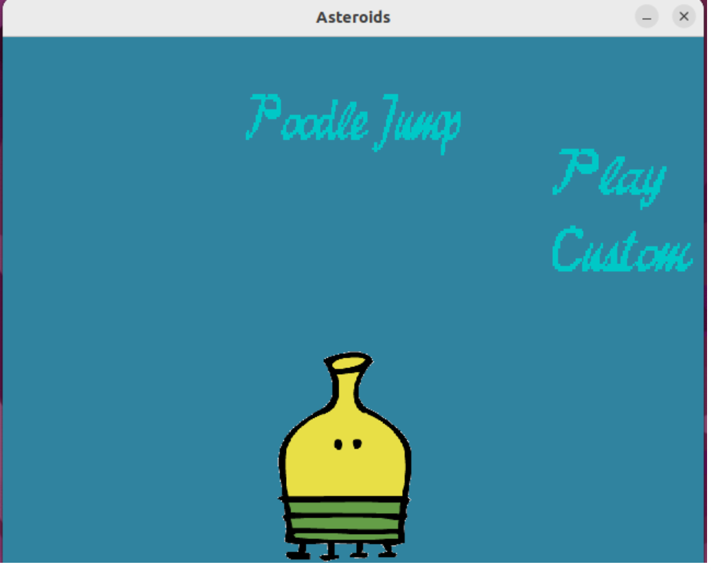
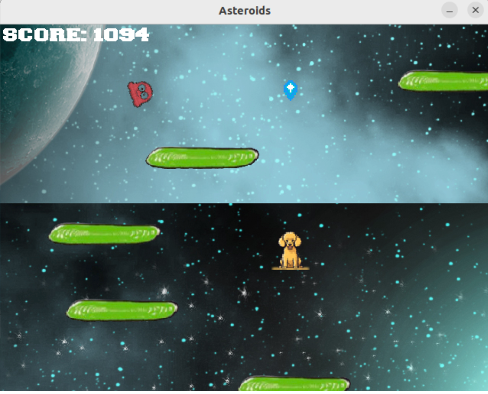
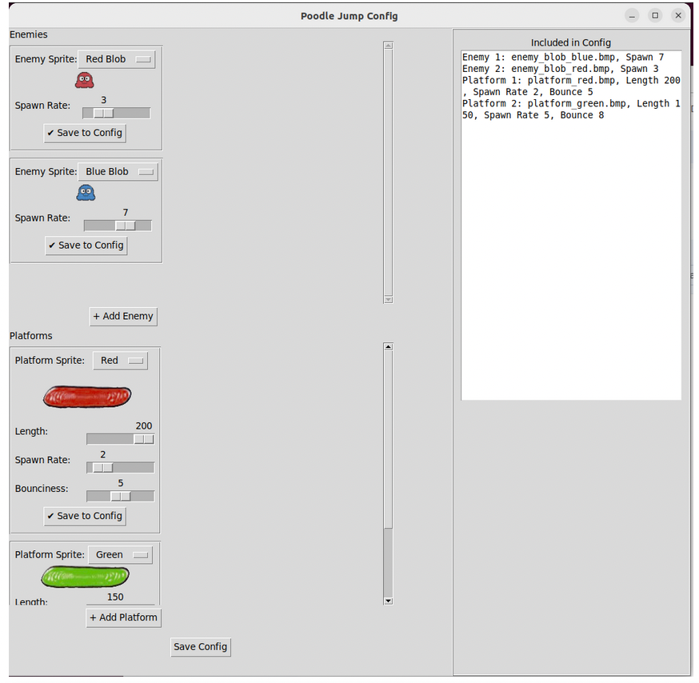
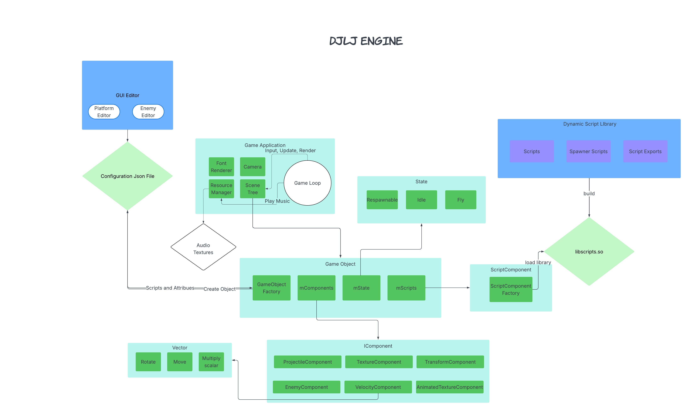

Final Project - Game Engine by Jerry Tan, Linden Lee, Joshua Baehring, and Devon Sawyer




Poodle Jump is a doodle jump-like game powered by a custom data-driven game engine. We built it using D and SDL2, with an emphasis on modularity, tooling, and JSON configuration. The config GUI, built in Python with tkinter and pillow, allowed us to define enemies, platforms, and archetypes externally and iterate rapidly.
If we had more time to work on this project, we would push for some notable improvements. The first improvement would be to allow our tile editor to influence more than just the objects in the game. Initially, we wanted to have the user develop “levels” or design segments of the game in a more detailed fashion so that they could jump through their own worlds, and it is something we would likely have done with more time. This initial plan also clashed with the basic game we had implemented, and the logistics of deciding when to load in user-generated segments of the game made things difficult. However, we still believe this feature has a lot of potential to enrich replayability and user creativity.
Another key improvement we considered was implementing parallax scrolling. Adding layers that move at different speeds would have created a much more immersive and visually engaging experience. It would have added depth to the game world and helped distinguish background elements from gameplay-critical ones. The core jumping mechanics were functional, but visually the game felt flat — parallax would have brought the world to life and made vertical progression feel more dynamic.
Some aspects of the game that we wanted did not come to life, such as implementing different health levels for various platform types and introducing power-ups that would alter or enhance the player’s movement. The idea was to create more variety and strategy in gameplay—for example, having fragile platforms that would break after one jump, or durable ones that could be used repeatedly but might be harder to reach. This would have added an extra layer of challenge and forced the player to think more critically about their jump paths. Similarly, we had planned to include power-ups like speed boosts, double jumps, or even temporary gliding abilities that would diversify how players interacted with the vertical space. Unfortunately, due to time constraints and the focus required to stabilize our core mechanics, these features were left on the cutting room floor. They remain promising additions we would pursue in future iterations to enrich the gameplay loop and make each session feel more dynamic and unpredictable.
Lastly, we wanted to incorporate hot reloading into our development workflow. Being able to update code or assets while the game is running — without needing a full rebuild — would have significantly sped up iteration time and testing. As it stood, each change required stopping and restarting the game, which broke momentum and made tuning small details more tedious. Implementing hot reloading would have streamlined our development process and allowed for more rapid experimentation with features, mechanics, and visual tweaks. Currently there is support for hot reloading, but we did not leverage it during our development and still need to work on a file watcher.